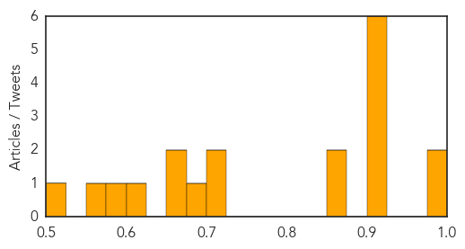
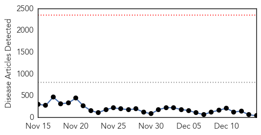
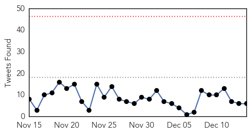
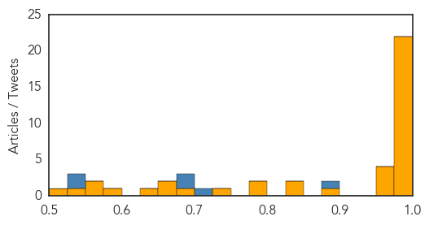

Unknown
30-Day Web Trend
0 alerts, 0 warnings

30-Day Twitter Trend
0 alerts, 0 warnings

Article Locations

Article Confidences
Top Articles:
- 0.996
- Flu cases climb in Dallas County
- 0.993
- GABON: Typhoid outbreak extends to capital hit by water supply problems
- 0.917
- Chicago Tribune
- 0.917
- Chicago Tribune
- 0.915
- Increased Norovirus Activity Noted in New Mexico
- 0.910
- The world windows to Thailand
- 0.910
- The world windows to Thailand
- 0.910
- The world windows to Thailand
- 0.866
- Libya's Es Sider oil export port closed due to clashes -oil official
- 0.866
- Turkish police raid newspaper close to U.S.-based cleric Gulen
- 0.707
- Brazil: Enterovirus outbreak closes hospital NICU
- 0.702
- Rural Industries Research and Development Corporation)
- 0.688
- 10 Facts About Fluoride You Need to Know
- 0.674
- Save water to save ourselves
- 0.652
- NIH receives 867 samples from K-P in 10 months
- 0.616
- Eight purpose-built mobile medical clinics arrive in Erbil - Iraq
- 0.580
- Hospitals out of drugs
- 0.552
- Australians too relaxed about bat virus
- 0.510
- USAID Administrator Shah Announces $2 Million Collaboration with Partners in Health Local Haitian Affiliate Zanmi Lasante
Top Tweets:
-
No tweets found for Dec 14, 2014
Ebola
30-Day Web Trend
0 alerts, 0 warnings

30-Day Twitter Trend
0 alerts, 0 warnings

Article Locations

Article Confidences
Top Articles:
- 1.000
- Zylast Wins USAIDs Fighting Ebola Grand Challenge
- 1.000
- Sierra Leone Bans Christmas Celebrations Cites Ebola
- 0.999
- UNRIC Library Backgrounder
- 0.999
- 12th Sierra Leonean physician contracts Ebola
- 0.999
- Another Sierra Leonean doctor sick with Ebola
- 0.999
- Ugandan Ebola expert shows African solidarity in Liberia
- 0.999
- Ebola: U.S. Provider Protocol and National Response Update
- 0.999
- What's Missing From Sierra Leone's Ebola Response
- 0.998
- INTERVIEW-Shock treatment: what's missing from Sierra Leone's Ebola response
- 0.998
- Through the lens of life, death
- 0.998
- Ugandan Ebola expert shows African solidarity in Liberia
- 0.997
- Observer
- 0.996
- Suspected Ebola case reported on French Indian island Réunion
- 0.994
- Immediate needs must be met to tackle Ebola — Gomes
- 0.994
- Saint Vincent graduate talks about Ebola field work
- 0.993
- They survived Ebola only to become social outcasts
- 0.993
- CDC details West African Ebola survivor support
- 0.993
- Shock treatment: what's missing from Sierra Leone's Ebola response
- 0.983
- The most from the coast
- 0.980
- Ebola Vaccine Trial Halted Temporarily After Joint Pains
- 0.980
- Tides opens in Lapu-Lapu; Maryland pianist-pedagogue mounts homecoming recital
- 0.977
- Ebola – end of the line for the killer virus in 2015?
- 0.970
- Another Sierra Leonean doctor sick with Ebola
- 0.968
- INTERVIEW-Shock treatment: what's missing from Sierra Leone's Ebola response
- 0.962
- Guinea imam's trip to Mali exposes gaps in Ebola response
- 0.955
- ANZAC-style Ebola treatment centre opens
- 0.894
- Nurse looks back on Ebola, Liberia
- 0.850
- UNICEF Thanks Cuba for Humanitarian Support to Countries with Ebola
- 0.846
- Australian-managed Ebola treatment centre begins operations in Sierra Leone - Sierra Leone
- 0.784
- An Ebola orphan’s plea in Africa: ‘Do you want me?’
- 0.781
- Liberia reschedules senate vote for Dec 20 despite Ebola
- 0.746
- Liberia reschedules senate vote for Dec 20 despite Ebola
- 0.681
- Maryland reservists gear up for Ebola mission
- 0.675
- Ebola in Guinea: changing entire cultures in 12 months - Guinea
- 0.653
- Obstruction virus spreads
- 0.640
- Innovators at Mass. General brainstorm ways to improve the global fight against Ebola
- 0.591
- Deplaning in Va. delayed while Ebola scare checked
- 0.552
- Gritty Ganta: The Liberian Town That Can't Catch A Break
- 0.552
- Gritty Ganta: The Liberian Town That Can't Catch A Break
- 0.529
- John Benjamin speaks from London
- 0.502
- The Tripologist: Travel tips and advice
Top Tweets:
- 0.895
- RT: We’ve completed 100 infection control trainings so far in Ebola affected countries (16 in Liberia; 66 in Sierra Leone; 1…
- 0.705
- RT: West Africa: Hunger Comes After Ebola http://t.co/zqVJXBRmIC ebola famine
- 0.694
- Officials fear fresh Ebola outbreak as death toll mounts in Sierra Leone http://t.co/FwGmidrZIB via
- 0.690
- RT: Ebola testing in Sierra Leone: "It’s hot and sweaty work done outside in tropical heat & full protective gear" http://t.c…
- 0.547
- Ebola toll in Guinea Sierra Leone and Liberia reaches 6583: WHO http://t.co/SgceTRuOJG | ElbowOutEbola EBOLANEWS
- 0.534
- Riding w Dr Thomas Mollet of European CDC in N'zerekore Guinea. ECDC helping stop Ebola. Need many more french-speaking epidemiologists.